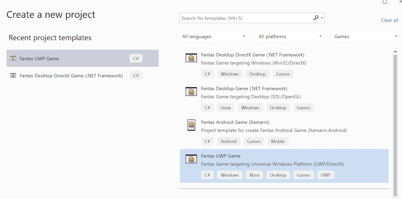

Quick Start on Windows
Setup development
Fantas will work with most .NET tools (Visual Studio 2017 or superior).
- The latest Visual Studio is recommended.
- Install ⬇ Fantas.Extension for Visual Studio.
Create new project
After installing Visual Studio extension, create a new project using File New Project:

Or Using dotnet new command line
If you want to create new game using new .NET instead of the classic you can do from the command line:
- Install Fantas templates for
dotnet new.
dotnet new install Fantas.Templates
This will install .NET Fantas templates, you can crate a new desktop game doing
mkdir MyGame
cd MyGame
dotnet new fantas-desktop
This are the templates available:
-------------------------------------------- -------------- -------- ---------------------------
Fantas Android Game (.NET) fantas-android [C#] android/mobile/games
Fantas Desktop DirectX Game (.NET - Windows) fantas-directx [C#] desktop/games/linux/windows
Fantas Desktop Game (.NET) fantas-desktop [C#] desktop/games/linux/windows
Fantas iOS Game (.NET) fantas-ios [C#] ios/games
Fantas macOS Game (.NET) fantas-mac [C#] macos/games
Fantas tvOS Game (.NET) fantas-tvos [C#] tvos/games